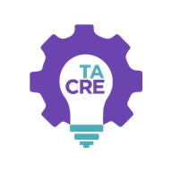

Más que una herramienta para agilizar cotizaciones, TACRE Cotizaciones es un sistema de flujo de trabajo: acompaña cada cotización de principio a fin —desde que nace como borrador hasta que se convierte en venta— dejando registro ordenado de cada etapa, decisión y responsable.
Está construido sobre una arquitectura escalable, pensada para crecer con la empresa: sobre esta misma base pueden incorporarse progresivamente nuevos módulos —inventario, órdenes de producción, seguimiento de obra, facturación— hasta lograr el control total de la operación en un solo lugar.
Funciona como aplicación instalable en computadoras, iPhone, iPad y Android, con la información sincronizada en la nube de Google y disponible incluso sin conexión.
Ítems con materiales, cantidades, unidades, fotos de producto, parámetros técnicos y condiciones de oferta. Reordenables a gusto.
Vendedor → Revisión de costos → Aprobación del jefe → Envío → Cierre. Cada paso queda registrado con fecha y responsable.
Vendedor, Costos, Jefe y Administrador. Cada quien ve y hace exactamente lo que le corresponde.
El jefe define mano de obra, costos operativos, flete e instalación, evalúa escenarios de margen y fija el precio final.
Importación desde Excel que actualiza precios sin borrar nada, exportación, y homologación de productos repetidos.
Cotización profesional con su logotipo, datos, condiciones y redes sociales. Totales siempre correctos.
WhatsApp y correo con un mensaje estándar de la empresa, para que todos comuniquen con el mismo nivel.
Fichas técnicas, planos y cartas hasta 25 MB por archivo, guardados con la cotización y enviables al cliente.
Ranking de vendedores, tasa de cierre, monto vendido, utilidad estimada, ciclo de venta en días y top de clientes.
Avisos automáticos en cada etapa del flujo y mensajería interna entre el equipo, con difusión del jefe a todos.
El jefe define hasta qué % puede ceder cada vendedor; el sistema impide regalar margen sin permiso.
Historial completo de cada cotización: quién hizo qué y cuándo. Consultable en cualquier etapa, incluso años después.
Cualquier falla o comportamiento incorrecto se corrige sin costo durante los primeros 90 días posteriores a la entrega.
Puede exportar toda su información (cotizaciones, catálogo, usuarios) en cualquier momento. Sin secuestro de datos ni permanencia forzada.
Autenticación gestionada por Google, control de acceso por roles aplicado en el servidor, conexión cifrada y respaldos automáticos diarios sobre la misma infraestructura que respalda a Gmail.
Las actualizaciones se prueban antes de publicarse y nunca modifican su información. Si algo falla, se revierte de inmediato.
Forma de pago a convenir. El servicio mensual comienza a partir de la puesta en marcha.
Alta de los usuarios reales, carga de su catálogo de materiales y aplicación de su identidad visual y condiciones comerciales.
Sesiones prácticas con cada rol. El equipo practica con cotizaciones de ejemplo antes de tocar información real.
Arranque en operación real con acompañamiento cercano para resolver dudas sobre la marcha.
Afinamos detalles según el uso real y comienza el ciclo de mejoras continuas del servicio mensual.
Si el equipo ahorra horas por semana en armar cotizaciones, y se evitan errores de margen en un proyecto grande, el sistema se paga solo. A eso se suma algo que no se mide en horas: presentarse ante sus clientes con documentos impecables y responder con la rapidez que hoy exige el mercado.
Con la aceptación de esta propuesta iniciamos la configuración de inmediato.
Quedo a sus órdenes para resolver cualquier duda o ajustar el alcance.